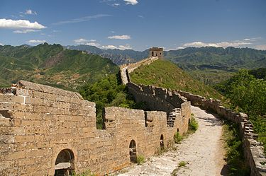
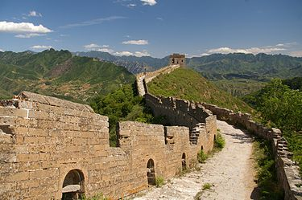

Сім нових чудес світу
Сім нових чудес світу — проект, організований фондом «Нові сім див світу» (NOWC), який намагався об'єднати сім чудес стародавнього світу із списком сучасних чудес з метою збереження культурної спадщини для майбутніх поколінь, аби уникнути повторення ситуації з сімома стародавніми дивами світу. Переможці оголошені 7 липня 2007 року в Лісабоні (Португалія). Голосування проходило за допомогою SMS, телефону або Інтернету.
Список чудес світу:
- Великий китайський мур
- Петра
- Тадж-Махал
- Колізей
- Мачу-Пікчу
- Христос-Спаситель
- Чичен-Іца
Великий китайський мур
 
 Вели́кий кита́йський мур (кит. 长城, пін. chángchéng, «довга стіна») — низка кам'яних та земляних укріплень у північній частині Китаю, збудованих з метою захисту північних кордонів Китайської імперії від вторгнень різних кочових племен. Археологічне дослідження 2008 року дійшло висновку, що Великий мур, побудований в епоху династії Мін (1368—1644), з усіма його секціями простягається на 8 851,8 км. Ця довжина складається з 6259 км самого муру, 359,7 км траншей та 2 232,5 км природних захисних бар'єрів, таких як гори та річки Його загальна протяжність згідно з результатами 2012 року становить 21 196,18 кілометрів.
Вели́кий кита́йський мур (кит. 长城, пін. chángchéng, «довга стіна») — низка кам'яних та земляних укріплень у північній частині Китаю, збудованих з метою захисту північних кордонів Китайської імперії від вторгнень різних кочових племен. Археологічне дослідження 2008 року дійшло висновку, що Великий мур, побудований в епоху династії Мін (1368—1644), з усіма його секціями простягається на 8 851,8 км. Ця довжина складається з 6259 км самого муру, 359,7 км траншей та 2 232,5 км природних захисних бар'єрів, таких як гори та річки Його загальна протяжність згідно з результатами 2012 року становить 21 196,18 кілометрів.
Петра
 Пе́тра (араб. البتراء, аль-Батра́; дав.-гр. Πέτρα — скеля) — стародавнє місто та найпопулярніша історична пам'ятка Йорданії. В минулому столиця Ідумеї та Набатейського царства, пізніше — важливе місто Римської імперії. В 1985 році Петра була внесена до переліку Світової спадщини ЮНЕСКО, а в 2007 році була обрана одним з Семи нових чудес світу. Місто розташоване на території сучасної Йорданії, на висоті понад 900 метрів над рівнем моря і 660 метрів над навколишньою місцевістю, долиною Арави, у вузькому каньйоні Сік. Прохід в долину — через ущелини, розташовані на півночі і на півдні, тоді як зі сходу і заходу скелі прямовисно обриваються, утворюючи природні стіни до 60 метрів у висоту.
Пе́тра (араб. البتراء, аль-Батра́; дав.-гр. Πέτρα — скеля) — стародавнє місто та найпопулярніша історична пам'ятка Йорданії. В минулому столиця Ідумеї та Набатейського царства, пізніше — важливе місто Римської імперії. В 1985 році Петра була внесена до переліку Світової спадщини ЮНЕСКО, а в 2007 році була обрана одним з Семи нових чудес світу. Місто розташоване на території сучасної Йорданії, на висоті понад 900 метрів над рівнем моря і 660 метрів над навколишньою місцевістю, долиною Арави, у вузькому каньйоні Сік. Прохід в долину — через ущелини, розташовані на півночі і на півдні, тоді як зі сходу і заходу скелі прямовисно обриваються, утворюючи природні стіни до 60 метрів у висоту.
Тадж-Махал
Та́дж Маха́л — монумент, розташований за два кілометри від міста Аґра (Індія), на березі річки Джамна. Збудований імператором Шах Джахан Мугалом як мавзолей для своєї перської дружини Мумтаз-Махал (в дівоцтві Арумад Бану Бегум), також відомої як Мутмаз-Ул-Замані, племінниці впливового царедворця при дворі індійського правителя. Будівництво зайняло 22 роки (з 1630 по 1652 рік). Слова Тадж і Махал походять з мови урду. Тадж на урду означає корона або діадема. Махал означає палац, будинок або особняк. За іншою теорією назва Тадж Махал походить від «Тейо Махалая» назви бога Шиви мовою гінді. Висота Тадж Махалу з маківкою досягає 74 м. В його основі лежить квадратна платформа зі сторонами понад 95 м. По кутах мавзолею розташовані чотири мінарети. Стіни викладені полірованим мармуром, зовні в деяких місцях доповнені червоним пісковиком. У вікнах та арках — ажурні решітки. Склепінчасті переходи розписані сурами із Корану арабськими літерами.
Колізей

 Колізе́й (лат. Сolosseum; італ. Сolosseo) або амфітеа́тр Фла́віїв (лат. Amphitheatrum Flavium; італ. Anfiteatro Flavio ) — амфітеатр, пам'ятка давньоримської архітектури, одна з найграндіозніших та найбільш відомих споруд античного світу. Будівництво амфітеатру було розпочато імператором Веспасіаном і завершено у 80 році н.е. його сином, Титом. Розташований в Римі, в низині між Есквілінським, Палатинським та Целійським пагорбами. На момент завершення будівництва мав найбільшу місткість в світі — від 50 до 80 тис. глядачів. Одразу по завершенні будівництва споруда дістала назву Амфітеатр Флавіїв (лат. Amphitheatrum Flavium) на честь династії Флавіїв, представниками якої були імператори Веспасіан і Тит. Під час правління Веспасіана в 72 році н. е. було розпочату будівництво амфітеатру, а в 80 році воно було завершено його сином та наступним імператором, Титом.
Колізе́й (лат. Сolosseum; італ. Сolosseo) або амфітеа́тр Фла́віїв (лат. Amphitheatrum Flavium; італ. Anfiteatro Flavio ) — амфітеатр, пам'ятка давньоримської архітектури, одна з найграндіозніших та найбільш відомих споруд античного світу. Будівництво амфітеатру було розпочато імператором Веспасіаном і завершено у 80 році н.е. його сином, Титом. Розташований в Римі, в низині між Есквілінським, Палатинським та Целійським пагорбами. На момент завершення будівництва мав найбільшу місткість в світі — від 50 до 80 тис. глядачів. Одразу по завершенні будівництва споруда дістала назву Амфітеатр Флавіїв (лат. Amphitheatrum Flavium) на честь династії Флавіїв, представниками якої були імператори Веспасіан і Тит. Під час правління Веспасіана в 72 році н. е. було розпочату будівництво амфітеатру, а в 80 році воно було завершено його сином та наступним імператором, Титом.
Мачу-Пікчу
 Ма́чу-Пі́кчу (кеч. Machu Pikchu — «стара вершина») — доколумбове місто інків, розташоване в Андах на висоті 2400 метрів на вершині гірського хребта над долиною річки Урубамби в Перу, за 80 км на північний захід від міста Куско. Мачу Пікчу також називають «місто в небесах», «місто серед хмар», «втраченим містом інків», є символом Імперії інків. Вважається, що місто було створене як священний гірський притулок великим правителем інків Пачакутеком за сторіччя до завоювання його імперії, тобто приблизно в 1440 році, і функціонувало до 1532 року, коли іспанці вдерлися на територію імперії, після чого місто було залишене його мешканцями. Іспанські конкістадори так і не дісталися до Мачу-Пікчу. Це місто не було зруйноване. Більш ніж на 400 років місто було забуте і перебувало в запустінні, але вже у 1911 році знову отримало всесвітню відомість. Його виявив американський дослідник з Єльського університету, професор Хайрам Бінґем 24 липня 1911 року. Коли він добрався сюди у супроводі виділеного урядом загону охорони й місцевого хлопчика-провідника, він виявив селян, що жили там. Як вони розповіли йому, вони жили там «вільними, без небажаних візитерів, чиновників, що вербують в армію „добровольців“, або збирачів податків».Місто було в запустінні. Крім того, тут раніше вже побували любителі визначних пам'яток, що залишили свої накреслені вугіллям імена на гранітних стінах. І сам Хайрам Бінґем в ході трьох своїх експедицій вивіз до США близько 5 тис. артефактів.
Ма́чу-Пі́кчу (кеч. Machu Pikchu — «стара вершина») — доколумбове місто інків, розташоване в Андах на висоті 2400 метрів на вершині гірського хребта над долиною річки Урубамби в Перу, за 80 км на північний захід від міста Куско. Мачу Пікчу також називають «місто в небесах», «місто серед хмар», «втраченим містом інків», є символом Імперії інків. Вважається, що місто було створене як священний гірський притулок великим правителем інків Пачакутеком за сторіччя до завоювання його імперії, тобто приблизно в 1440 році, і функціонувало до 1532 року, коли іспанці вдерлися на територію імперії, після чого місто було залишене його мешканцями. Іспанські конкістадори так і не дісталися до Мачу-Пікчу. Це місто не було зруйноване. Більш ніж на 400 років місто було забуте і перебувало в запустінні, але вже у 1911 році знову отримало всесвітню відомість. Його виявив американський дослідник з Єльського університету, професор Хайрам Бінґем 24 липня 1911 року. Коли він добрався сюди у супроводі виділеного урядом загону охорони й місцевого хлопчика-провідника, він виявив селян, що жили там. Як вони розповіли йому, вони жили там «вільними, без небажаних візитерів, чиновників, що вербують в армію „добровольців“, або збирачів податків».Місто було в запустінні. Крім того, тут раніше вже побували любителі визначних пам'яток, що залишили свої накреслені вугіллям імена на гранітних стінах. І сам Хайрам Бінґем в ході трьох своїх експедицій вивіз до США близько 5 тис. артефактів.
Христос-Спаситель
 «Христос-Спаситель» (порт. Cristo Redentor) — статуя Ісуса Христа в Ріо-де-Жанейро, Бразилія. Статуя має розмір 39,6 м заввишки (розмах рук 28 метрів), важить 1145 тонн, і знаходиться на вершині 710-метрової гори Корковаду в національному парку ліс Тіжука, в межах міста. Збудована як символ християнства, статуя стала символом Ріо-де-Жанейро і Бразилії.Ідея встановлення великої статуї на горі Корковаду була вперше висловлена в середині 1850-х років, коли католицький священик Педру Марія Босс попросив у принцеси Ізабели фінансування, щоб побудувати статую великого ченця. Принцеса Ізабелла не була в захваті від цієї ідеї, яка була загалом забута в 1889 році, коли Бразилія стала республікою та за новою конституцією церква була відділена від держави.Проєкти «статуї Христа», що розглядалися, включали великий християнський хрест, статую Ісуса з глобусом в руці, і п'єдестал, що символізував би світ. В результаті була вибрана статуя Христа-спасителя із розкритими руками.
«Христос-Спаситель» (порт. Cristo Redentor) — статуя Ісуса Христа в Ріо-де-Жанейро, Бразилія. Статуя має розмір 39,6 м заввишки (розмах рук 28 метрів), важить 1145 тонн, і знаходиться на вершині 710-метрової гори Корковаду в національному парку ліс Тіжука, в межах міста. Збудована як символ християнства, статуя стала символом Ріо-де-Жанейро і Бразилії.Ідея встановлення великої статуї на горі Корковаду була вперше висловлена в середині 1850-х років, коли католицький священик Педру Марія Босс попросив у принцеси Ізабели фінансування, щоб побудувати статую великого ченця. Принцеса Ізабелла не була в захваті від цієї ідеї, яка була загалом забута в 1889 році, коли Бразилія стала республікою та за новою конституцією церква була відділена від держави.Проєкти «статуї Христа», що розглядалися, включали великий християнський хрест, статую Ісуса з глобусом в руці, і п'єдестал, що символізував би світ. В результаті була вибрана статуя Христа-спасителя із розкритими руками.
Чичен-Іца
 Чичен-Іца або Чичен-Ітца (науатль: Chichen Itza, вимова: /tʃiːˈtʃɛn iːˈtsɑː/, від юкатецького словосполучення: chich'en itza' — «біля виходу джерела Іца») — стародавнє місто на півночі Юкатану.Засноване, приблизно 455 року (згідно книги М. Стінгла, "Таємниці індіанських пірамід") невідомими натепер племенами майя. Тоді місто носило назву, яку дослідники розшифровують як Вук-Йабналь. Стосовно державного устрою замало відомостей, в написах того періоду зовсім відсутні згадки про священних ахавів.У цей період держава була залежною від царства Талол зі столицею в Ек-Баламі. Правителі Чичен-Іци носили титул «священного кокоома» або ачлевааха. У середині 870-х років Вук-Йабналь на чолі із К'ак'упакаль-К'авіілєм скинув залежність від Ек-Балама. Руїни Чичен-Іци зараз є федеральною власністю мексиканського уряду, а керівництво ними підтримується мексиканським Національним інститутом антропології та історії (es:Instituto Nacional de Antropología e Historia, INAH). Земля під руїнами була викуплена в місцевих землевласників — родини Барбачано.
Чичен-Іца або Чичен-Ітца (науатль: Chichen Itza, вимова: /tʃiːˈtʃɛn iːˈtsɑː/, від юкатецького словосполучення: chich'en itza' — «біля виходу джерела Іца») — стародавнє місто на півночі Юкатану.Засноване, приблизно 455 року (згідно книги М. Стінгла, "Таємниці індіанських пірамід") невідомими натепер племенами майя. Тоді місто носило назву, яку дослідники розшифровують як Вук-Йабналь. Стосовно державного устрою замало відомостей, в написах того періоду зовсім відсутні згадки про священних ахавів.У цей період держава була залежною від царства Талол зі столицею в Ек-Баламі. Правителі Чичен-Іци носили титул «священного кокоома» або ачлевааха. У середині 870-х років Вук-Йабналь на чолі із К'ак'упакаль-К'авіілєм скинув залежність від Ек-Балама. Руїни Чичен-Іци зараз є федеральною власністю мексиканського уряду, а керівництво ними підтримується мексиканським Національним інститутом антропології та історії (es:Instituto Nacional de Antropología e Historia, INAH). Земля під руїнами була викуплена в місцевих землевласників — родини Барбачано.